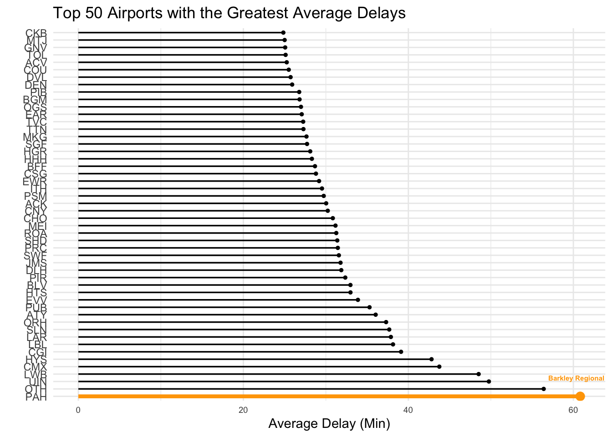

Welcome to an Exploratory Data Analysis of flights in the U.S. from June 2019! As you scroll down, you’ll see the data has already been processed and is simply being visualized. Prior to the creation of the data visualizations below, the data was queried using MySql and exported from MySql Workbench.
For more information on the data source, visit the About section.
As you scroll, you will see that many of the graphs are interactive. Please hover over them to get all of the information displayed! In addition, all code cells are collpased, but can be opened by pressing the down arrow.
Part 1: Data and Package Load
To start the project, I loaded data and packages. Importantly, the data I am exploring includes the total number of flights in June 2019 in the United States, the number of cancelled flights, airline specific information on delays/early departures, and airport specific information on delays.
Next, I wanted to explore the number of flights. I first made a time series graph, looking at the total number of flights over the course of the month.
Hover over the data points to see the fluctuations in the number of flights over the month!
I observed a cylical pattern where the past three day average number of flights was lower on the weekends and higher during the week. This may reflect the fact that airlines cater more flights for business travel during the week for a non-holiday heavy month.
Code
# Make sure flights date are date typeflight_report$FlightDate <-as.Date(flight_report$FlightDate)# Create time series interactive plotmy_time_series <- flight_report |>ggplot(aes(x=FlightDate, y=three_day_avg)) +geom_point(size =1) +geom_area(alpha =1/2, fill ='lightblue') +theme_minimal()+labs(x ="Date", y ="Average Number of Flights (Past Three Days)", title ="Average Number of Flights over the Past Three Days in June, 2019") +theme(plot.title =element_text(size =11, hjust =0.5))interactive_plot <-ggplotly(my_time_series)interactive_plot
Secondly, I looked at the overall break down of number of flights per week day. The weekend has a slightly larger number of total flights, however, the weekdays are all about even and not far off from the weekend values. This tells me that even though Saturday and Sunday have higher flight numbers, their past three day averages get lowered either by a lower week day value and/or week day values having consistently high values throughout the entire month.
Code
# Load color paletteslibrary(RColorBrewer)# Create pie chartmy_pie <-plot_ly(rank_days, labels =~Day, values=~num_flights, type="pie")my_pie |>layout(title =list(text="Number of Flights by Day of Week"))
Part 3: Airline Trends
In this next section, I wanted to dive deeper into airline trends. I specifically wanted to see if there was a relationship between an airline having the maximum delay and the maximum early departure.
I did this by plotting the maximum early departure on the x-axis and the maximum delay on the y-axis. Each point represents an indiviudal airline that you can see by hoving over the data point.
Code
# Combine data sets togethercombined_data <-inner_join(max_delay, max_early, by ="name")combined_data$Max_Early <-abs(combined_data$Max_Early)# Create scatter plotmy_scatterplot <- combined_data |>ggplot(aes(x=Max_Early, y=Max_Delay, color = name)) +geom_point(shape =18) +theme_minimal()+labs(x ="Maximum Early Departure (Min)", y ="Maximum Flight Delay (Min)", color ="Airline", title ="Airline Maximum Early Departure vs Delay") +theme(plot.title =element_text(size =11, hjust =0.5), legend.position ="none")interactive_scatter <-ggplotly(my_scatterplot)interactive_scatter
In viewing the graph, I don’t see any correlation between the two variables. However, I wanted to verify this quickly by getting the pearson correlation coefficient.
The pearson correlation coefficient value reveals there is virtually no correlation at all between maximum early departure and maximum delay. This could be potentially very important information for travelers when booking since we can’t confidently say that an airline with the lowest maximum delay also has the highest maximum early departure.
Part 4: Airport Deep Dive
After looking into the airline, I wanted to switch to look at airports. First, I wanted to look at the average delay amongst all airports and look at the top 50 airports in-depth.
As you can see below, the Barkley Regional Airport in West Paducah, Kentucky has the highest average delay.
Code
# Make Origin into a factor typemax_avg_delay$Origin <-factor(max_avg_delay$Origin, levels = max_avg_delay$Origin)# Grab top 50 airportstop50 <-head(max_avg_delay, 50)# Plot lollipop graphtop50 |>ggplot(aes(x=Origin, y=Avg_Delay)) +geom_segment(aes(x=Origin, xend=Origin, y=0, yend=Avg_Delay),color=ifelse((top50$Origin =="PAH"), "orange","black"),size=ifelse((top50$Origin =="PAH"), 1.5, 0.6)) +geom_point(color=ifelse((top50$Origin =="PAH"), "orange","black"),size=ifelse((top50$Origin =="PAH"), 3, 1)) +theme_minimal() +coord_flip() +labs(x ="", y ="Average Delay (Min)", title ="Top 50 Airports with the Greatest Average Delays")+theme(axis.text.x =element_text(size =8)) +annotate("text", x=grep("OTH", top50$Origin)*1.75, y=top50$Avg_Delay[which(top50$Origin=="OTH")]*1.01, label="Barkley Regional", color="orange", size=2 , angle=0, fontface="bold", hjust=0)

Similarly, I wanted to look at the bottom 50 airports that had the lowest average delay.
If you’re traveling anytime soon, you may want to look at King Salmon Airport in King Salmon, Alaska as they win by a land slide!
Looking specifically at airports and airline, I then wanted to see which airport had the highest average delay for each airline. It turns out there’s a lot of variability in airports as seen below!
If you like traveling with a specific airline, hover over the bubble to see which airport you may want to avoid!
Code
# Create bubble graphmy_airport <-plot_ly( airport_max_delay,x =~name,y =~Avg_Delay,size =~Avg_Delay,color =~name,customdata =~airport_name,type ="scatter",mode ="markers",marker =list(sizemode ="diameter"),hovertemplate ="%{customdata}<extra></extra>")my_airport |>layout(showlegend =FALSE, xaxis =list(title="Airline"), yaxis =list(title="Average Delay (Min)"), title =list(text="Highest Average Delay per Airline and Airport"))
Part 5: Flight Cancellations
Lastly, I wanted to look at cancelled flights as in June 2019 alone, there were 13,227 of them! There are various reasons why a flight might be cancelled but they can generally be summed up in the following categories:
Weather: conditions outside were not safe for flying.
Carrier: the airline itself cancelled the flight (up to their discretion).
National Air System: the flight had to be cancelled due to a directive from the Federal Aviation Administration.
The below graph simply only summarizes the cancellation reasons that were the top reason at each airport.
As you can see, Weather is more than 50% of the top reason flights are cancelled. If you haven’t already before, it’s important to monitor the weather the day of your flight and be prepared for a possible cancellation.